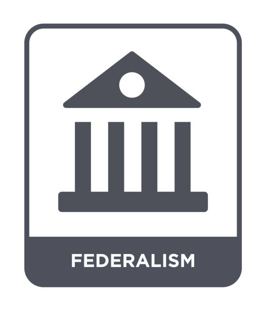

About Federalism
- Definition
- Some Examples
- Why is this important?
Definition
Federalism is the idea of a mixed government where states, or other regions, govern along side the central, or federal, government.
In the United States
The United States has three layers of government, local, state, and federal.
The local government's job is to run schools, transportation, build houses, and more.
The state government's job is to build and maintain roads, take part in legislative, executive, and judicial activities, etc.
The federal government's job is to administer foreign policies, make and remove laws, defend the nation, and much, much more.
If government power wasn't split up, we would have another articles of confederation where states are fighting for power, while the government can't do anything.